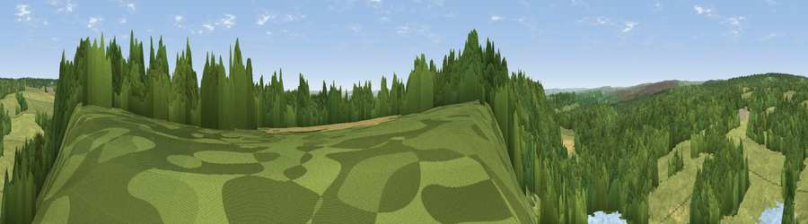

Viewpoint near Newton upon Rawcliffe
#24754 in England · top 55% of its area beats it · near Newton upon Rawcliffe · open accessWhere it is
The exact computed spot (SE 78857 90471). Click the marker for map links.
Public access: this spot lies on mapped open-access land (CRoW Act 2000) — you may roam here on foot. Computed from Natural England's CRoW access layer and OpenStreetMap rights of way — not the legal definitive map. Always verify locally.
The view, rendered

A 360° render of this exact spot computed from the terrain model, tree cover and land cover — summer colours, afternoon light, calibrated against photographs of famous viewpoints. Real trees, hedges and buildings will differ in detail.
The panorama
Grey silhouette: terrain skyline in each direction (720 bearings, Earth curvature and refraction included). Dashed green: skyline with trees (+15 m) and buildings (+8 m) as obstacles. Blue strip: how far the ground is visible on each bearing.
Where the view opens
Wedge length = distance to the farthest visible ground on that bearing (vegetation-aware). Rings at 10, 25 and 50 km.
What fills the view
44% woodland · 42% grassland · 13% water ·
Angular shares of the visible panorama (visual magnitude), not map area. Landscape diversity 0.45 (0–1 Shannon).
Key numbers
More beautiful places nearby
The staircase of upgrades: each row has a higher view potential than everything closer. Driving times are estimates from straight-line distance, calibrated against real road routing — check an actual route before setting out.
| Place | Direction | Drive | Score |
|---|---|---|---|
| Viewpoint near Newton upon Rawcliffe | ENE · 2 km | ~5 min | 56.2 |
| Viewpoint near Cropton | WSW · 3 km | ~7 min | 57.4 |
| Viewpoint near Cropton | WSW · 3 km | ~8 min | 61.5 |
| Ana Cross | WNW · 7 km | ~15 min | 65.9 |
| Viewpoint near Gillamoor | W · 12 km | ~22 min | 67.2 |
| Viewpoint near Gillamoor | W · 13 km | ~23 min | 72.8 |
| Flat Howe | NNE · 16 km | ~28 min | 76.4 |
| Viewpoint near Eskdaleside | NNE · 16 km | ~28 min | 78.4 |
54.30377, -0.78966 · source: osm viewpoint · position refined by local search. Computed location — check access rights before visiting.